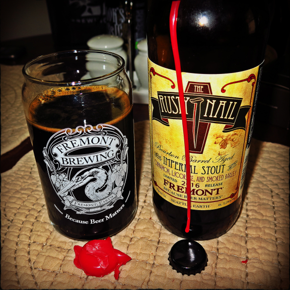

HOME
STOUTS
The Rusty Nail
Fremont Brewing Co.
The Rusty Nail begins life as The First Nail, an oatmeal stout of epic proportions with brewer’s licorice, smoked barley, and pale malt and is then aged on cinnamon bark. She becomes The Rusty Nail after spending 15 months in 12-year old bourbon barrels.
Fremont is industrial and sleekly postmodern – home to artists, fisherpeople, tradespeople, technology geeks, and lots of beer lovers. And, for those who don't know, Washington state is home to the second largest hop growing region in the world.
Check out their site HERE 